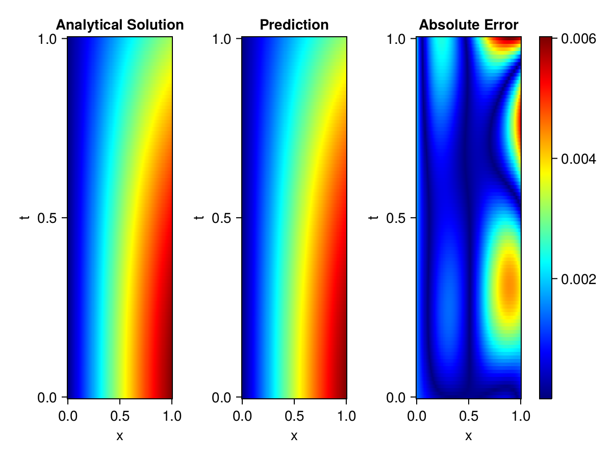
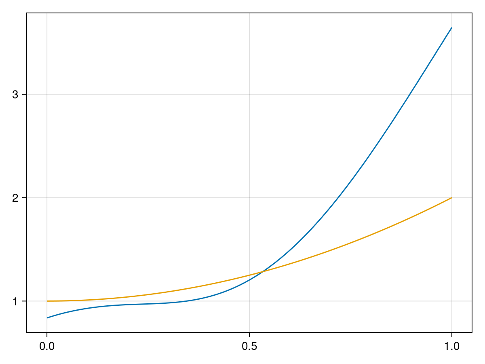

Inverse problem for the wave equation with unknown velocity field
We are going to sovle the wave equation.
using Sophon, ModelingToolkit, IntervalSets
using Optimization, OptimizationOptimJL, Zygote
@parameters x, t
@variables u(..), c(..)
Dₜ = Differential(t)
Dₜ² = Differential(t)^2
Dₓ² = Differential(x)^2
s(x,t) = abs2(x) * sin(x) * cos(t)
eq = Dₜ²(u(x,t)) ~ c(x) * Dₓ²(u(x,t)) + s(x,t)
bcs = [u(x, 0) ~ sin(x),
Dₜ(u(x, 0)) ~ 0,
u(0, t) ~ 0,
u(1, t) ~ sin(1) * cos(t)]
domains = [t ∈ Interval(0.0, 1.0),
x ∈ Interval(0.0, 1.0)]
@named wave = PDESystem(eq, bcs, domains, [t,x], [u(x,t),c(x)])\[ \begin{align} \frac{\mathrm{d}}{\mathrm{d}t} \frac{\mathrm{d}}{\mathrm{d}t} u\left( x, t \right) =& c\left( x \right) \frac{\mathrm{d}}{\mathrm{d}x} \frac{\mathrm{d}}{\mathrm{d}x} u\left( x, t \right) + \cos\left( t \right) \sin\left( x \right) \left|x\right|^{2} \end{align} \]
Here the velocity field $c(x)$ is unknown, we will approximate it with a neural network.
pinn = PINN(u = FullyConnected((2,16,16,16,1), sin),
c = FullyConnected((1,16,16,1), tanh))
sampler = QuasiRandomSampler(500,100)
strategy = NonAdaptiveTraining(1, (10,10,1,1))NonAdaptiveTraining{Int64, NTuple{4, Int64}}(1, (10, 10, 1, 1))Next we generate some data of $u(x,t)$. Here we place two sensors at $x=0.1$ and $x=0.5$.
ū(x,t) = sin(x) * cos(t)
x_data = hcat(fill(0.1, 1, 50), fill(0.5, 1, 50))
t_data = repeat(range(0.0, 1.0, length = 50),2)'
input_data = [x_data; t_data]
u_data = ū.(x_data, t_data)1×100 Matrix{Float64}:
0.0998334 0.0998126 0.0997503 0.0996464 … 0.275281 0.267213 0.259035Finally we construct the inverse problem and solve it.
additional_loss(phi, θ) = sum(abs2, phi.u(input_data, θ.u) .- u_data)
prob = Sophon.discretize(wave, pinn, sampler, strategy; additional_loss=additional_loss)
@showprogress res = Optimization.solve(prob, BFGS(), maxiters=1000)u: ComponentVector{Float64}(u = (layer_1 = (weight = [0.4045049095019975 -0.7812259930149549; -0.08654837163637681 0.3915631468854113; … ; 0.5468302973536167 -0.145131447972505; -0.6618665658894886 0.39495403717679217], bias = [0.05050631141504082; 0.11162095967364519; … ; 0.25860861520100575; -0.16269434705181707;;]), layer_2 = (weight = [-0.12966823329758467 0.448502841724545 … 0.11786779977483915 -0.09043389158642771; -0.6353929549009192 -0.3299632702188406 … 0.3886520936250949 -0.037143640715165474; … ; 0.48875821421935495 -0.43718421750360964 … 0.24035511226333522 0.3704677943145738; 0.6080054647988204 0.22325576181277085 … 0.16051211085428588 0.5736248733424933], bias = [0.11326071637721671; -0.036751572281428425; … ; -0.19682018413147687; -0.23783068888128042;;]), layer_3 = (weight = [0.06076534574838295 0.3697833209629728 … -0.06602084577520317 0.660415930329533; 0.11462550864386277 -0.4336989609154956 … -0.007726248306365881 0.08799999203044195; … ; -0.09670810430468955 0.5026082746643826 … -0.35219405858142233 0.5882576367062906; 0.1682184957962538 0.3815158343385714 … -0.2988387904564154 -0.04080287453848275], bias = [-0.10658597983767538; 0.04427053042969366; … ; -0.03605169928822867; 0.33135720969564586;;]), layer_4 = (weight = [-0.6112588836113242 0.47438256801456374 … 0.011042161241556794 -0.2726478267924171], bias = [0.020437399947231177;;])), c = (layer_1 = (weight = [-1.9866060764153364; -1.6452111720114144; … ; -2.6896141144981547; 0.8127874392059887;;], bias = [-0.44809085406794713; -0.20739063484193246; … ; 0.6307101130215342; -0.5706251229842555;;]), layer_2 = (weight = [0.17285158910275175 -0.6579894753294313 … -0.6233485576535234 -0.7138949245939532; 0.4199036108534638 -0.13789611575629432 … 0.4871900119510811 0.42598513567108454; … ; 0.5862868268689481 0.41568251099846726 … 0.06976674600146786 0.5196440694545543; -0.2670301738389867 -0.7007158938095356 … 0.19591333596281582 -0.3427936810449851], bias = [-0.11121002530192073; -0.006128579871083832; … ; -0.15951393427562463; -0.10264950611835172;;]), layer_3 = (weight = [-1.4009624752565666 -0.023143272725533872 … -0.40277606417663697 -0.6929848977067427], bias = [0.8522384339579381;;])))Let's visualize the predictted solution and inferred velocity
using CairoMakie
ts = range(0, 1; length=100)
xs = range(0, 1; length=100)
u_pred = [pinn.phi.u([x, t], res.u.u)[1] for x in xs, t in ts]
c_pred = [pinn.phi.c([x], res.u.c)[1] for x in xs]
u_true = [ū(x, t) for x in xs, t in ts]
c_true = 1 .+ abs2.(xs) |> vec
axis = (xlabel="x", ylabel="t", title="Analytical Solution")
fig, ax1, hm1 = heatmap(xs, ts, u_true, axis=axis; colormap=:jet)
ax2, hm2= heatmap(fig[1, end+1], xs, ts, u_pred, axis= merge(axis, (;title = "Prediction")); colormap=:jet)
ax3, hm3 = heatmap(fig[1, end+1], xs, ts, abs.(u_true .- u_pred), axis= merge(axis, (;title = "Absolute Error")); colormap=:jet)
Colorbar(fig[:, end+1], hm3)
fig
fig, ax = lines(xs, c_pred)
lines!(ax, xs, c_true)
fig